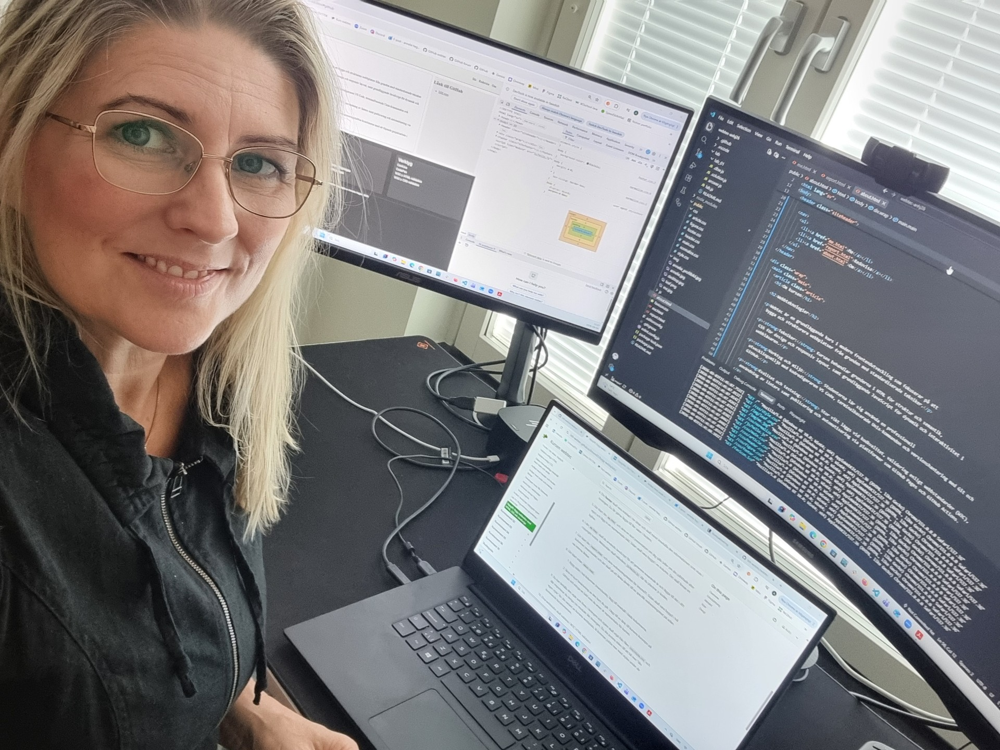

Om kursen
Webbteknologier

Webtec är en grundläggande kurs i modern frontendutveckling som fokuserar på att bygga och strukturera webbplatser från grunden med standardiserade tekniker.
Tekniker: Kursen behandlar grunderna i HTML för struktur och semantik, CSS för design och responsiv layout, samt grundläggande JavaScript för dynamik och interaktivitet i webbläsaren.
Verktyg och miljö: Studenterna lär sig använda en professionell utvecklingsmiljö med kodredigeraren VS Code, terminalbaserade Unix-kommandon och versionshantering med Git och GitHub.
Kvalitet och testning: Stor vikt läggs vid kodkvalitet, validering enligt webbstandarder (W3C), användning av linters samt publicering och automatisering via plattformar som GitHub Pages och GitHub Actions.
Praktiskt upplägg: Momenten bygger på iterativt lärande där teoretiska genomgångar och programmeringslabbar kombineras med ett löpande projektarbete i form av en egen presentations- och redovisningswebbplats.